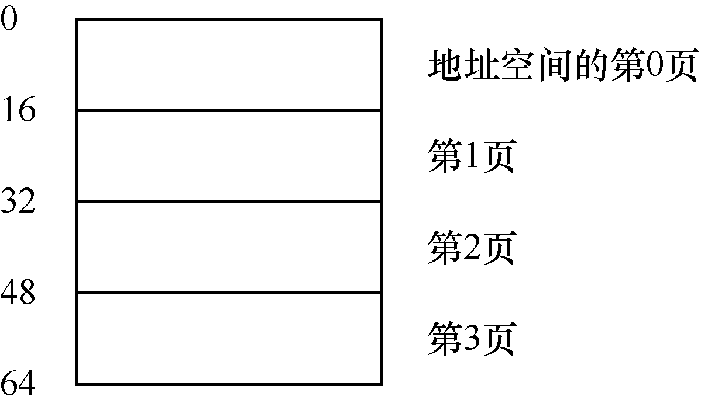
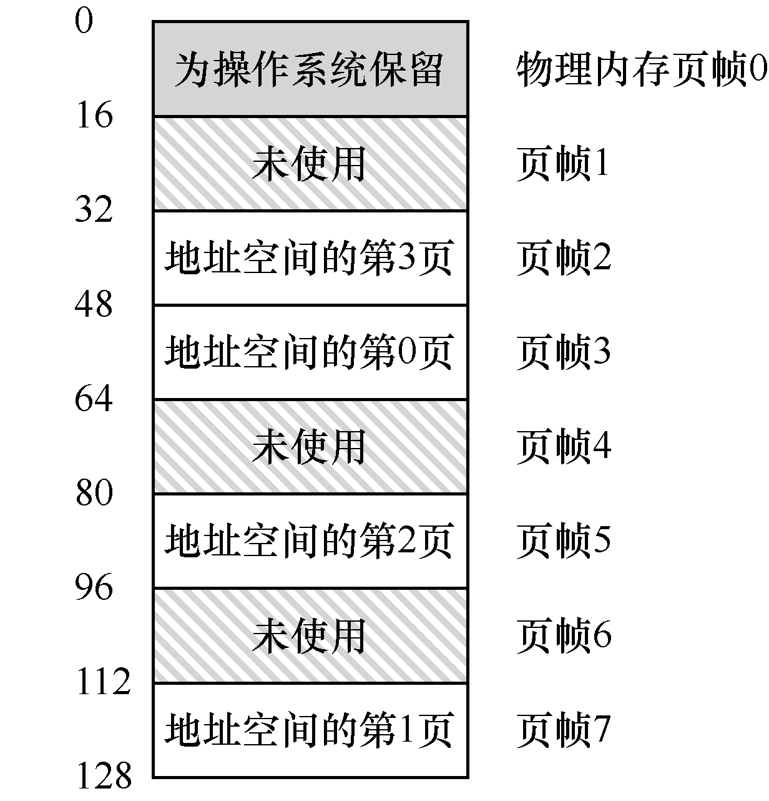
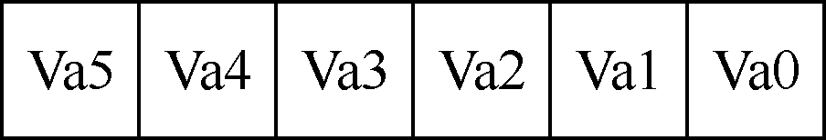
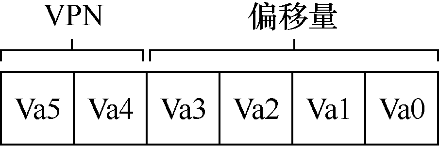
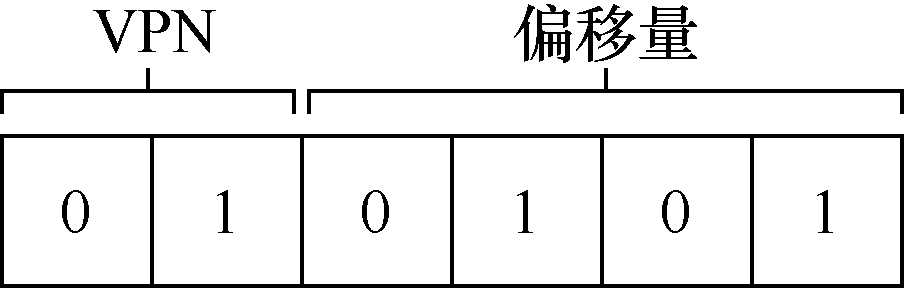
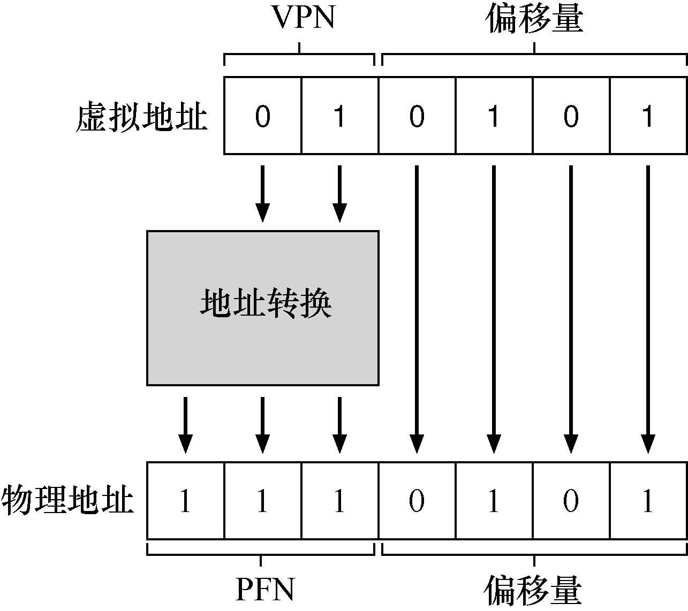
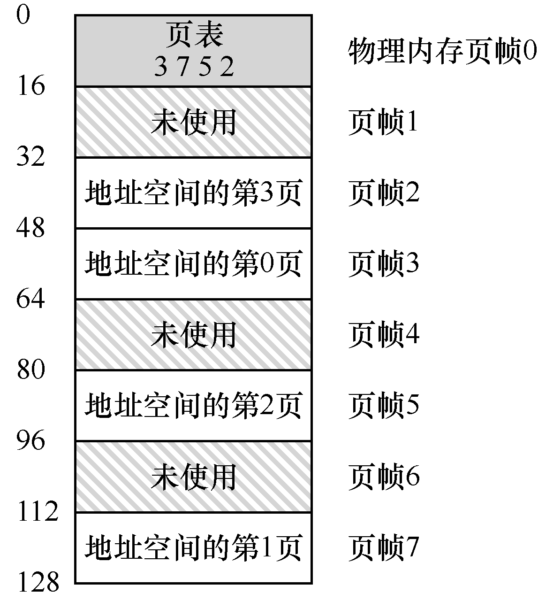
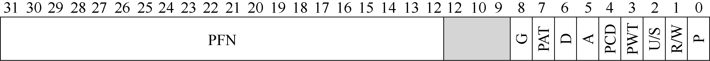
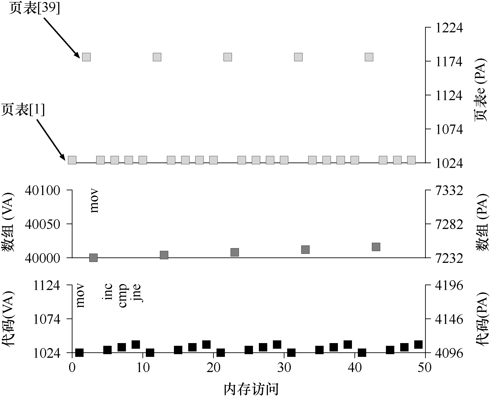

有时候人们会说，操作系统有两种方法，来解决大多数空间管理问题。第一种是将空间分割成不同长度的分片，就像虚拟内存管理中的分段。遗憾的是，这个解决方法存在固有的问题。具体来说，将空间切成不同长度的分片以后，空间本身会碎片化（fragmented），随着时间推移，分配内存会变得比较困难。
因此，值得考虑第二种方法：将空间分割成固定长度的分片。在虚拟内存中，我们称这种思想为分页，可以追溯到一个早期的重要系统，Atlas[KE+62, L78]。分页不是将一个进程的地址空间分割成几个不同长度的逻辑段（即代码、堆、段），而是分割成固定大小的单元，每个单元称为一页。相应地，我们把物理内存看成是定长槽块的阵列，叫作页帧（page frame）。每个这样的页帧包含一个虚拟内存页。我们的挑战是：
关键问题：如何通过页来实现虚拟内存
如何通过页来实现虚拟内存，从而避免分段的问题？基本技术是什么？如何让这些技术运行良好，并尽可能减少空间和时间开销？
18.1 一个简单例子¶
为了让该方法看起来更清晰，我们用一个简单例子来说明。图 18.1 展示了一个只有 64 字节的小地址空间，有 4 个 16 字节的页（虚拟页 0、1、2、3）。真实的地址空间肯定大得多，通常 32 位有 4GB 的地址空间，甚至有 64 位1。在本书中，我们常常用小例子，让大家更容易理解。
物理内存，如图 18.2 所示，也由一组固定大小的槽块组成。在这个例子中，有 8 个页帧（由 128 字节物理内存构成，也是极小的）。从图中可以看出，虚拟地址空间的页放在物理内存的不同位置。图中还显示，操作系统自己用了一些物理内存。
可以看到，与我们以前的方法相比，分页有许多优点。可能最大的改进就是灵活性：通过完善的分页方法，操作系统能够高效地提供地址空间的抽象，不管进程如何使用地址空间。例如，我们不会假定堆和栈的增长方向，以及它们如何使用。
另一个优点是分页提供的空闲空间管理的简单性。例如，如果操作系统希望将 64 字节的小地址空间放到 8 页的物理地址空间中，它只要找到 4 个空闲页。也许操作系统保存了一个所有空闲页的空闲列表（free list），只需要从这个列表中拿出 4 个空闲页。在这个例子里，操作系统将地址空间的虚拟页 0 放在物理页帧 3，虚拟页 1 放在物理页帧 7，虚拟页 2 放在物理页帧 5，虚拟页 3 放在物理页帧 2。页帧 1、4、6 目前是空闲的。

图 18.1 一个简单的 64 字节地址空间

图 18.2 64 字节的地址空间在 128 字节的物理内存中
为了记录地址空间的每个虚拟页放在物理内存中的位置，操作系统通常为每个进程保存一个数据结构，称为页表（page table）。页表的主要作用是为地址空间的每个虚拟页面保存地址转换（address translation），从而让我们知道每个页在物理内存中的位置。对于我们的简单示例（见图 18.2），页表因此具有以下 4 个条目：（虚拟页 0→物理帧 3）、（VP 1→PF 7）、（VP 2→PF 5）和（VP 3→PF 2）。
重要的是要记住，这个页表是一个每进程的数据结构（我们讨论的大多数页表结构都是每进程的数据结构，我们将接触的一个例外是倒排页表，inverted page table）。如果在上面的示例中运行另一个进程，操作系统将不得不为它管理不同的页表，因为它的虚拟页显然映射到不同的物理页面（除了共享之外）。
现在，我们了解了足够的信息，可以完成一个地址转换的例子。设想拥有这个小地址空间（64 字节）的进程正在访问内存：
movl <virtual address>, %eax
具体来说，注意从地址 <virtual address> 到寄存器 eax 的数据显式加载（因此忽略之前肯定会发生的指令获取）。
为了转换（translate）该过程生成的虚拟地址，我们必须首先将它分成两个组件：虚拟页面号（virtual page number，VPN）和页内的偏移量（offset）。对于这个例子，因为进程的虚拟地址空间是 64 字节，我们的虚拟地址总共需要 6 位（26 = 64）。因此，虚拟地址可以表示如下：

六位虚拟地址，从最高位 Va5 到最低位 Va0
在该图中，Va5 是虚拟地址的最高位，Va0 是最低位。因为我们知道页的大小（16 字节），所以可以进一步划分虚拟地址，如下所示：

高两位为 VPN，低四位为页内偏移量
页面大小为 16 字节，位于 64 字节的地址空间。因此我们需要能够选择 4 个页，地址的前 2 位就是做这件事的。因此，我们有一个 2 位的虚拟页号（VPN）。其余的位告诉我们，感兴趣该页的哪个字节，在这个例子中是 4 位，我们称之为偏移量。
当进程生成虚拟地址时，操作系统和硬件必须协作，将它转换为有意义的物理地址。例如，让我们假设上面的加载是虚拟地址 21：
movl 21, %eax
将“21”变成二进制形式，是“010101”，因此我们可以检查这个虚拟地址，看看它是如何分解成虚拟页号（VPN）和偏移量的：

虚拟地址 21：VPN 为 01，偏移量为 0101
因此，虚拟地址“21”在虚拟页“01”（或 1）的第 5 个（“0101”）字节处。通过虚拟页号，我们现在可以检索页表，找到虚拟页 1 所在的物理页面。在上面的页表中，物理帧号（PFN）（有时也称为物理页号，physical page number 或 PPN）是 7（二进制 111）。因此，我们可以通过用 PFN 替换 VPN 来转换此虚拟地址，然后将载入发送给物理内存（见图 18.3）。
请注意，偏移量保持不变（即未翻译），因为偏移量只是告诉我们页面中的哪个字节是我们想要的。我们的最终物理地址是 1110101（十进制 117），正是我们希望加载指令（见图 18.2）获取数据的地方。

图 18.3 地址转换过程
有了这个基本概念，我们现在可以询问（希望也可以回答）关于分页的一些基本问题。例如，这些页表在哪里存储？页表的典型内容是什么，表有多大？分页是否会使系统变（得很）慢？这些问题和其他迷人的问题（至少部分）在下文中回答。请继续阅读！
18.2 页表存在哪里¶
页表可以变得非常大，比我们之前讨论过的小段表或基址/界限对要大得多。例如，想象一个典型的 32 位地址空间，带有 4KB 的页。这个虚拟地址分成 20 位的 VPN 和 12 位的偏移量（回想一下，1KB 的页面大小需要 10 位，只需增加两位即可达到 4KB）。
一个 20 位的 VPN 意味着，操作系统必须为每个进程管理 220 个地址转换（大约一百万）。假设每个页表格条目（PTE）需要 4 个字节，来保存物理地址转换和任何其他有用的东西，每个页表就需要巨大的 4MB 内存！这非常大。现在想象一下有 100 个进程在运行：这意味着操作系统会需要 400MB 内存，只是为了所有这些地址转换！即使是现在，机器拥有千兆字节的内存，将它的一大块仅用于地址转换，这似乎有点疯狂，不是吗？我们甚至不敢想 64 位地址空间的页表有多大。那太可怕了，也许把你吓坏了。
由于页表如此之大，我们没有在 MMU 中利用任何特殊的片上硬件，来存储当前正在运行的进程的页表，而是将每个进程的页表存储在内存中。现在让我们假设页表存在于操作系统管理的物理内存中，稍后我们会看到，很多操作系统内存本身都可以虚拟化，因此页表可以存储在操作系统的虚拟内存中（甚至可以交换到磁盘上），但是现在这太令人困惑了，所以我们会忽略它。图 18.4 展示了操作系统内存中的页表，看到其中的一小组地址转换了吗？

图 18.4 例子：内核物理内存中的页表
18.3 列表中究竟有什么¶
让我们来谈谈页表的组织。页表就是一种数据结构，用于将虚拟地址（或者实际上，是虚拟页号）映射到物理地址（物理帧号）。因此，任何数据结构都可以采用。最简单的形式称为线性页表（linear page table），就是一个数组。操作系统通过虚拟页号（VPN）检索该数组，并在该索引处查找页表项（PTE），以便找到期望的物理帧号（PFN）。现在，我们将假设采用这个简单的线性结构。在后面的章节中，我们将利用更高级的数据结构来帮助解决一些分页问题。
至于每个 PTE 的内容，我们在其中有许多不同的位，值得有所了解。有效位（valid bit）通常用于指示特定地址转换是否有效。例如，当一个程序开始运行时，它的代码和堆在其地址空间的一端，栈在另一端。所有未使用的中间空间都将被标记为无效（invalid），如果进程尝试访问这种内存，就会陷入操作系统，可能会导致该进程终止。因此，有效位对于支持稀疏地址空间至关重要。通过简单地将地址空间中所有未使用的页面标记为无效，我们不再需要为这些页面分配物理帧，从而节省大量内存。
我们还可能有保护位（protection bit），表明页是否可以读取、写入或执行。同样，以这些位不允许的方式访问页，会陷入操作系统。
还有其他一些重要的部分，但现在我们不会过多讨论。存在位（present bit）表示该页是在物理存储器还是在磁盘上（即它已被换出，swapped out）。当我们研究如何将部分地址空间交换（swap）到磁盘，从而支持大于物理内存的地址空间时，我们将进一步理解这一机制。交换允许操作系统将很少使用的页面移到磁盘，从而释放物理内存。脏位（dirty bit）也很常见，表明页面被带入内存后是否被修改过。
参考位（reference bit，也被称为访问位，accessed bit）有时用于追踪页是否被访问，也用于确定哪些页很受欢迎，因此应该保留在内存中。这些知识在页面替换（page replacement）时非常重要，我们将在随后的章节中详细研究这一主题。
图 18.5 显示了来自 x86 架构的示例页表项[I09]。它包含一个存在位（P），确定是否允许写入该页面的读/写位（R/W），确定用户模式进程是否可以访问该页面的用户/超级用户位（U/S），有几位（PWT、PCD、PAT 和 G）确定硬件缓存如何为这些页面工作，一个访问位（A）和一个脏位（D），最后是页帧号（PFN）本身。

图 18.5 一个 x86 页表项（PTE）
阅读英特尔架构手册[I09]，以获取有关 x86 分页支持的更多详细信息。然而，要事先警告，阅读这些手册时，尽管非常有用（对于在操作系统中编写代码以使用这些页表的用户而言，这些手册当然是必需的），但起初可能很具挑战性。需要一点耐心和强烈的愿望。
18.4 分页：也很慢¶
内存中的页表，我们已经知道它们可能太大了。事实证明，它们也会让速度变慢。以简单的指令为例：
movl 21, %eax
同样，我们只看对地址 21 的显式引用，而不关心指令获取。在这个例子中，我们假定硬件为我们执行地址转换。要获取所需数据，系统必须首先将虚拟地址（21）转换为正确的物理地址（117）。因此，在从地址 117 获取数据之前，系统必须首先从进程的页表中提取适当的页表项，执行转换，然后从物理内存中加载数据。
为此，硬件必须知道当前正在运行的进程的页表的位置。现在让我们假设一个页表基址寄存器（page-table base register）包含页表的起始位置的物理地址。为了找到想要的 PTE 的位置，硬件将执行以下功能：
VPN = (VirtualAddress & VPN_MASK) >> SHIFT
PTEAddr = PageTableBaseRegister + (VPN * sizeof(PTE))
在我们的例子中，VPN_MASK 将被设置为 0x30（十六进制 30，或二进制 110000），它从完整的虚拟地址中挑选出 VPN 位；SHIFT 设置为 4（偏移量的位数），这样我们就可以将 VPN 位向右移动以形成正确的整数虚拟页码。例如，使用虚拟地址 21（010101），掩码将此值转换为 010000，移位将它变成 01，或虚拟页 1，正是我们期望的值。然后，我们使用该值作为页表基址寄存器指向的 PTE 数组的索引。
一旦知道了这个物理地址，硬件就可以从内存中获取 PTE，提取 PFN，并将它与来自虚拟地址的偏移量连接起来，形成所需的物理地址。具体来说，你可以想象 PFN 被 SHIFT 左移，然后与偏移量进行逻辑或运算，以形成最终地址，如图 18.6 所示。
offset = VirtualAddress & OFFSET_MASK
PhysAddr = (PFN << SHIFT) | offset
// Extract the VPN from the virtual address
VPN = (VirtualAddress & VPN_MASK) >> SHIFT
// Form the address of the page-table entry (PTE)
PTEAddr = PTBR + (VPN * sizeof(PTE))
// Fetch the PTE
PTE = AccessMemory(PTEAddr)
// Check if process can access the page
if (PTE.Valid == False)
RaiseException(SEGMENTATION_FAULT)
else if (CanAccess(PTE.ProtectBits) == False)
RaiseException(PROTECTION_FAULT)
else
// Access is OK: form physical address and fetch it
offset = VirtualAddress & OFFSET_MASK
PhysAddr = (PTE.PFN << PFN_SHIFT) | offset
Register = AccessMemory(PhysAddr)
图 18.6 利用分页访问内存
最后，硬件可以从内存中获取所需的数据并将其放入寄存器 eax。程序现在已成功从内存中加载了一个值！
总之，我们现在描述了在每个内存引用上发生的情况的初始协议。基本方法如图 18.6 所示。对于每个内存引用（无论是取指令还是显式加载或存储），分页都需要我们执行一个额外的内存引用，以便首先从页表中获取地址转换。工作量很大！额外的内存引用开销很大，在这种情况下，可能会使进程减慢两倍或更多。
现在你应该可以看到，有两个必须解决的实际问题。如果不仔细设计硬件和软件，页表会导致系统运行速度过慢，并占用太多内存。虽然看起来是内存虚拟化需求的一个很好的解决方案，但这两个关键问题必须先克服。
18.5 内存追踪¶
在结束之前，我们现在通过一个简单的内存访问示例，来演示使用分页时产生的所有内存访问。我们感兴趣的代码片段（用 C 写的，名为 array.c）是这样的：
int array[1000];
...
for (i = 0; i < 1000; i++)
array[i] = 0;
我们编译 array.c 并使用以下命令运行它：
prompt> gcc -o array array.c -Wall -O
prompt> ./array
补充：数据结构——页表
现代操作系统的内存管理子系统中最重要的数据结构之一就是页表（page table）。通常，页表存储虚拟—物理地址转换（virtual-to-physical address translation），从而让系统知道地址空间的每个页实际驻留在物理内存中的哪个位置。由于每个地址空间都需要这种转换，因此一般来说，系统中每个进程都有一个页表。页表的确切结构要么由硬件（旧系统）确定，要么由 OS（现代系统）更灵活地管理。
当然，为了真正理解这个代码片段（它只是初始化一个数组）进程怎样的内存访问，我们必须知道（或假设）一些东西。首先，我们必须反汇编结果二进制文件（在 Linux 上使用 objdump 或在 Mac 上使用 otool），查看使用什么汇编指令来初始化循环中的数组。以下是生成的汇编代码：
0x1024 movl $0x0,(%edi,%eax,4)
0x1028 incl %eax
0x102c cmpl $0x03e8,%eax
0x1030 jne 0x1024
如果懂一点 x86，代码实际上很容易理解2。第一条指令将零值（显示为 $0x0）移动到数组位置的虚拟内存地址，这个地址是通过取 %edi 的内容并将其加上 %eax 乘以 4 来计算的。因此，%edi 保存数组的基址，而 %eax 保存数组索引（i）。我们乘以 4，因为数组是一个整型数组，每个元素的大小为 4 个字节。
第二条指令增加保存在 %eax 中的数组索引，第三条指令将该寄存器的内容与十六进制值 0x03e8 或十进制数 1000 进行比较。如果比较结果显示两个值不相等（这就是 jne 指令测试），第四条指令跳回到循环的顶部。
为了理解这个指令序列（在虚拟层和物理层）所访问的内存，我们必须假设虚拟内存中代码片段和数组的位置，以及页表的内容和位置。
对于这个例子，我们假设一个大小为 64KB 的虚拟地址空间（不切实际地小）。我们还假定页面大小为 1KB。
我们现在需要知道页表的内容，以及它在物理内存中的位置。假设有一个线性（基于数组）的页表，它位于物理地址 1KB（1024）。
至于其内容，我们只需要关心为这个例子映射的几个虚拟页面。首先，存在代码所在的虚拟页面。由于页大小为 1KB，虚拟地址 1024 驻留在虚拟地址空间的第二页（VPN = 1，因为 VPN = 0 是第一页）。假设这个虚拟页映射到物理帧 4（VPN 1→PFN 4）。3
接下来是数组本身。它的大小是 4000 字节（1000 整数），我们假设它驻留在虚拟地址 40000 到 44000（不包括最后一个字节）。它的虚拟页的十进制范围是 VPN = 39……VPN = 42。因此，我们需要这些页的映射。针对这个例子，让我们假设以下虚拟到物理的映射：
(VPN 39 → PFN 7), (VPN 40 → PFN 8), (VPN 41 → PFN 9), (VPN 42 → PFN 10)
我们现在准备好跟踪程序的内存引用了。当它运行时，每个取指将产生两个内存引用：一个访问页表以查找指令所在的物理框架，另一个访问指令本身将其提取到 CPU 进行处理。另外，在 mov 指令的形式中，有一个显式的内存引用，这会首先增加另一个页表访问（将数组虚拟地址转换为正确的物理地址），然后是数组访问本身。
图 18.7 展示了前 5 次循环迭代的整个过程。最下面的图显示了 y 轴上的指令内存引用（黑色虚拟地址和右边的实际物理地址）。中间的图以深灰色展示了数组访问（同样，虚拟在左侧，物理在右侧）；最后，最上面的图展示了浅灰色的页表内存访问（只有物理的，因为本例中的页表位于物理内存中）。整个追踪的 x 轴显示循环的前 5 个迭代中内存访问。每个循环有 10 次内存访问，其中包括 4 次取指令，一次显式更新内存，以及 5 次页表访问，为这 4 次获取和一次显式更新进行地址转换。

图 18.7 虚拟（和物理）内存追踪
看看你是否可以理解在这个可视化中出现的模式。特别是，随着循环继续，超过前 5 次迭代，会发生什么变化？哪些新的内存位置将被访问？你能弄明白吗？
这只是最简单的例子（只有几行 C 代码），但你可能已经能够感觉到理解实际应用程序的实际内存行为的复杂性。别担心：它肯定会变得更糟，因为我们即将引入的机制只会使这个已经很复杂的机器更复杂。
18.6 小结¶
我们已经引入了分页（paging）的概念，作为虚拟内存挑战的解决方案。与以前的方法（如分段）相比，分页有许多优点。首先，它不会导致外部碎片，因为分页（按设计）将内存划分为固定大小的单元。其次，它非常灵活，支持稀疏虚拟地址空间。
然而，实现分页支持而不小心考虑，会导致较慢的机器（有许多额外的内存访问来访问页表）和内存浪费（内存被页表塞满而不是有用的应用程序数据）。因此，我们不得不努力想出一个分页系统，它不仅可以工作，而且工作得很好。幸运的是，接下来的两章将告诉我们如何去做。
参考资料¶
[KE+62] “One-level Storage System” T. Kilburn, and D.B.G. Edwards and M.J. Lanigan and F.H. Sumner. IRE Trans. EC-11, 2 (1962), pp. 223-235. (Reprinted in Bell and Newell, “Computer Structures: Readings and Examples”, McGraw-Hill, New York, 1971).
Atlas 开创了将内存划分为固定大小页面的想法，在许多方面，都是我们在现代计算机系统中看到的内存管理思想的早期形式。
[I09] “Intel 64 and IA-32 Architectures Software Developer’s Manuals” Intel, 2009. Available.
具体来说，要注意《卷 3A：系统编程指南第 1 部分》和《卷 3B：系统编程指南第 2 部分》。
[L78] “The Manchester Mark I and atlas: a historical perspective” S. H. Lavington. Communications of the ACM archive Volume 21, Issue 1 (January 1978), pp. 4-12. Special issue on computer architecture.
本文是一些重要计算机系统发展历史的回顾。我们在美国有时会忘记，这些新想法中的许多来自其他国家。
作业¶
在这个作业中，你将使用一个简单的程序（名为 paging-linear-translate.py），来看看你是否理解了简单的虚拟—物理地址转换如何与线性页表一起工作。详情请参阅 README 文件。
问题¶
- 在做地址转换之前，让我们用模拟器来研究线性页表在给定不同参数的情况下如何改变大小。在不同参数变化时，计算线性页表的大小。一些建议输入如下，通过使用
-v标志，你可以看到填充了多少个页表项。
首先，要理解线性页表大小如何随着地址空间的增长而变化：
paging-linear-translate.py -P 1k -a 1m -p 512m -v -n 0
paging-linear-translate.py -P 1k -a 2m -p 512m -v -n 0
paging-linear-translate.py -P 1k -a 4m -p 512m -v -n 0
然后，理解线性页表大小如何随页大小的增长而变化：
paging-linear-translate.py -P 1k -a 1m -p 512m -v -n 0
paging-linear-translate.py -P 2k -a 1m -p 512m -v -n 0
paging-linear-translate.py -P 4k -a 1m -p 512m -v -n 0
在运行这些命令之前，请试着想想预期的趋势。页表大小如何随地址空间的增长而改变？随着页大小的增长呢？为什么一般来说，我们不应该使用很大的页呢？
- 现在让我们做一些地址转换。从一些小例子开始，使用
-u标志更改分配给地址空间的页数。例如：
paging-linear-translate.py -P 1k -a 16k -p 32k -v -u 0
paging-linear-translate.py -P 1k -a 16k -p 32k -v -u 25
paging-linear-translate.py -P 1k -a 16k -p 32k -v -u 50
paging-linear-translate.py -P 1k -a 16k -p 32k -v -u 75
paging-linear-translate.py -P 1k -a 16k -p 32k -v -u 100
如果增加每个地址空间中的页的百分比，会发生什么？
- 现在让我们尝试一些不同的随机种子，以及一些不同的（有时相当疯狂的）地址空间参数：
paging-linear-translate.py -P 8 -a 32 -p 1024 -v -s 1
paging-linear-translate.py -P 8k -a 32k -p 1m -v -s 2
paging-linear-translate.py -P 1m -a 256m -p 512m -v -s 3
哪些参数组合是不现实的？为什么？
- 利用该程序尝试其他一些问题。你能找到让程序无法工作的限制吗？例如，如果地址空间大小大于物理内存，会发生什么情况？